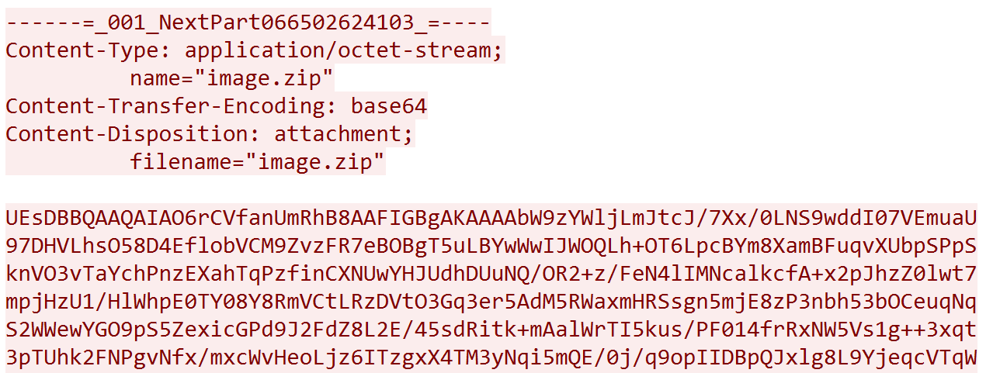
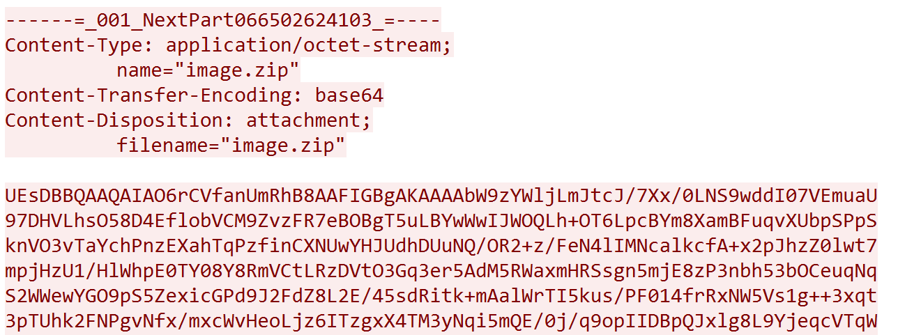
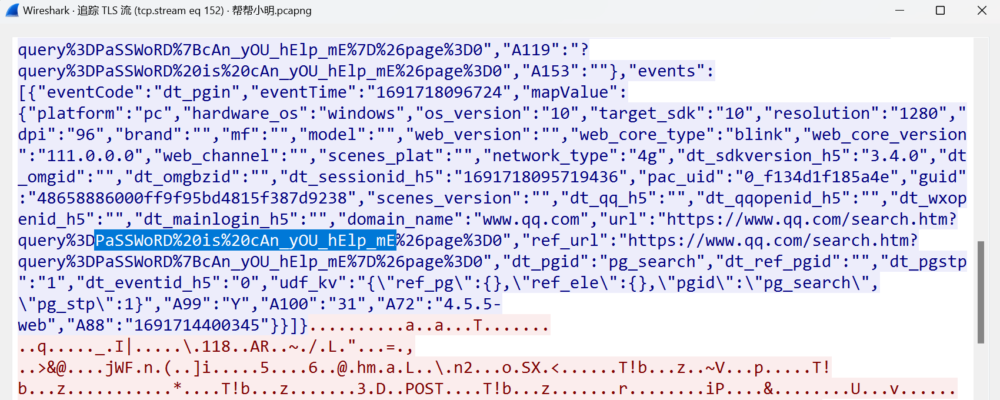

[ISCC2023线下] MISC1 WP
考点
流量分析，TLS，二维码修复
解题步骤
首先速览一遍帮帮小明.pcapng，发现里面的协议有IMAP和TLS，这部分可能有线索
打开统计->会话，TCP栏有两个终点为25端口的地址，追踪流量，是两次对话
 发现一个压缩包

保存，发现有密码，里面是一个加密后的文件mosaic.bmp，用zipcenop排除了伪加密的可能性，所以密码应该在另一个tcp流中
发现一段明文，用的gb2312编码，用vscode打开：
发现一个压缩包

保存，发现有密码，里面是一个加密后的文件mosaic.bmp，用zipcenop排除了伪加密的可能性，所以密码应该在另一个tcp流中
发现一段明文，用的gb2312编码，用vscode打开：
 害，怎么密码忘了呢，只能往后面慢慢找了
这里附件还给了tls-log.txt，猜测需要解密tls密文，在编辑——>首选项——>Protocols——>TLS——>(Pre)-Master-Secret log filename这里加入即可
最后在某个TLS流找到了密码
害，怎么密码忘了呢，只能往后面慢慢找了
这里附件还给了tls-log.txt，猜测需要解密tls密文，在编辑——>首选项——>Protocols——>TLS——>(Pre)-Master-Secret log filename这里加入即可
最后在某个TLS流找到了密码cAn_yOU_hElp_mE

解压压缩包，得到图片mosaic.bmp
 还好队友见过原题，直接把脚本放了上来，参数甚至一点没变就可以用
还好队友见过原题，直接把脚本放了上来，参数甚至一点没变就可以用
|
|
解密后读取二维码即可
后话
这次iscc线下真的有点抽象，关卡题打到12点还只有我们队解出来了这一题，其他队伍都是爆零，后来主办方延时到18点，结果还是没人解出来…awd也很难搞，开始3h的pwn和web私地都只有寥寥几队打进来，主办方看不下去了就开放了pwn私地，可惜当时也不会打其他队伍，就简单布防了一下，不过虽然没拿分但也没被打，还是保住了排名
总的来说是难度偏大的一次线下。